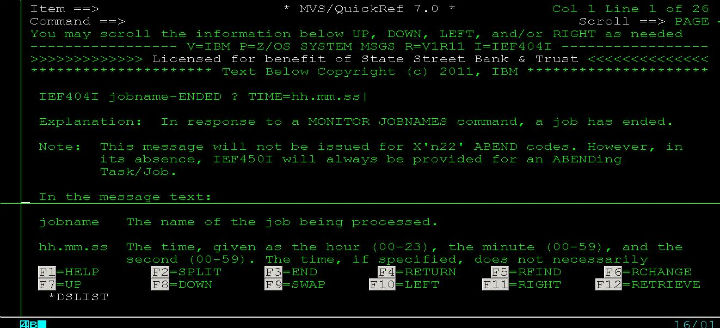
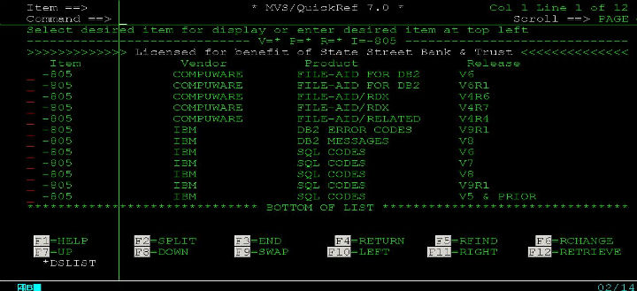
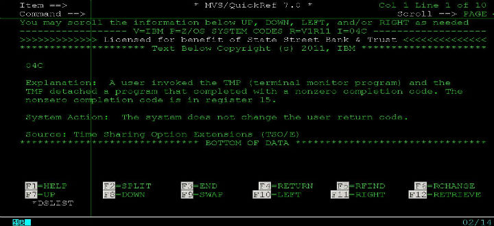

QW命令——MVS/QuickRef帮助文档
2011-08-05
大机平台上有一个很了不起的帮助文档系统，名字叫做MVS/QuickRef，是一款强大的在线查询系统。用过微软的MSDN的童鞋都知道MSDN的强大。大机上面的MVS/QuickRef几乎可以查到所有你想查的资料，因为这款查询工具号称超过5k万行，以简单易懂著称。最主要的是查询特别方便，使用ISPF直接调用命令QW即可查询内容。
MVS/QuickRef现在最新的版本是2011年4月份新出的MVS/QuickRef 7.4 ，我们公司还在用的是7.0的版本。这款强大的查询工具是由一家名叫Chicago-Soft的公司生产的，主页在:MVS/QuickRef主页，可以去看看。
在大机上，MVS/QuickRef能查询许多方面的。这是官网上关于MVS/QuickRef强大的一段文字描述：
"MVS/QuickRef's simple, easy to understand information helps you resolve 97% of the problems affecting z/OS, CICS, DB/2, IDMS, ADABAS, JCL, JES, COBOL. It has the answers to MVS abend codes, z/OS error messages plus 1,260 software products from IBM, CA, BMC and 72 other independent software vendors."
好了，我举几个例子说明QW能用来做什么：
想知道JOB log里面的输出信息IEF404I是什么意思？
QW IEF404I

在编译/Bind DB2程序的时候返回-805不知道什么意思？
QW -805

在提交job的时候abend，返回S04C系统错误码不知道什么原因？
QW S04C

这里只是举几个例子抛砖引玉，实际工作中当然会遇到各种各样的返回码什么的，这时候就是体现QW命令的价值的时候了。
Category: articles Tagged: z/OS